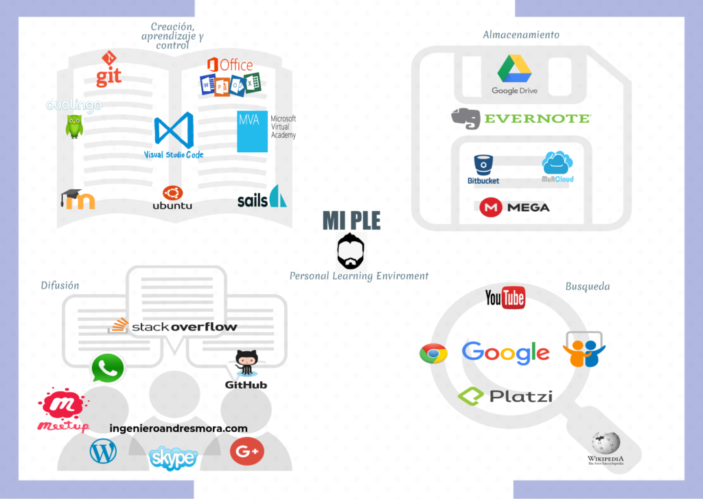

WEs un espacio de almacenamiento en Internet que te permite guardar tu sitio web para que pueda ser consultado a través de los navegadores como Chrome, Firefox o Safari.
Sobre mi
Principal información sobre miSobre mis habilidades
A continuación se pueden evidenciar mis habilidades:
PREGUNTAS FRECUENTES
¿Qué es hosting?
¿Qué es un dominio?
Es el nombre desde el cual podrá ser accedido tu sitio web a través de la barra de búsqueda de los navegadores, se recomienda usar nombres cortos y que no se asemeje a uno ya existente, pregúntame todo lo necesario a través de este link.
¿Qué tipos de Apps existen?
En general hay dos tipos de Apps, las informativas que permiten consultar la misma información que está publicada en las páginas web y por lo general es información estática, quiere decir que no se cambia con mucha frecuencia y las interactivas, que permiten ejecutar procesos de ventas, reservas, juegos, estas últimas son un poco más complejas ya que dependen del servidor para responder a sus solicitudes.
¿Qué tipos de Apps existen?
En general hay dos tipos de Apps, las informativas que permiten consultar la misma información que está publicada en las páginas web y por lo general es información estática, quiere decir que no se cambia con mucha frecuencia y las interactivas, que permiten ejecutar procesos de ventas, reservas, juegos, estas últimas son un poco más complejas ya que dependen del servidor para responder a sus solicitudes.
¿Qué son apps nativas e hibridas
Las Apps nativas son las que están desarrolladas específicamente para cada sistema operativo (Android o iOS) estas son recomendadas para cuando vas a utilizar constantemente los recursos del dispositivo móvil como por ejemplo, el GPS, Camara, Bluetooth, huella, almacenamiento. Las apps hibridas se desarrollan con una misma base de código, normalmente usa tecnologías como HTML, CSS y JavaScript, funcionan igual para los dos sistemas operativos y son más fáciles de actualizar.
¿Cómo puedo publicar mi app ya desarrollada?
Tanto para Android como para iOS se deben seguir una serie de pasos para que llegue a estar disponible en las tiendas, entre los pasos estan, que sigan ciertos estandares de calidad, usabilidad y pagos, a través de este link podrás preguntar más información.
¿Qué es SEO?
Search Engine Optimization permite optimizar tu sitio web para que los buscadores encuentren el contenido más relevante y así generar un mejor posicionamiento de tu web, con un mejor posicionamiento permitirá que tengas más clientes porque te encontrarán más fácilmente.
¿Para qué sirve la metadata en el posicionamiento?
La metadata permite que tu sitio se clasifique de una mejor forma, es decir los buscadores podrán conocer tu sitio web y los servicios que ofreces más fácilmente si tienes una buena estructura de metadata publicada.
¿Es importante vincular mis redes sociales en mi sitio web?
Si, entre más información haya disponible en Internet acerca de tu sitio web mejor posicionamiento tendrás, abrir como mínimo Facebook, YouTube y Twitter permiten desarrollar una mejor estrategia digital.
Portafolio
Conocer mi portafolioOPINIONES
January 22, 2018 Logos
La principal red de microbloging también puede convertirse en un medio para compartir...
La principal red de microbloging también puede convertirse en un medio para compartir actividades en la educación es por esto que destaco las principales características que tiene este red social enfocadas a la educación, espero que disfruten este contenido.
Así como Facebook, Pinterest es una red social que permite la difusión de contenidos educativos ...
Así como Facebook, Pinterest es una red social que permite la difusión de contenidos educativos usando imágenes llamativas, es por esto que he realizado varios tableros que permiten conocer temas relevantes a la tecnología, para que así las personas que deseen conocer aun más sobre estos temas puedan hacerlo pero desde esta red social.
este es el enlaceEl uso de Facebook normalmente está relacionado con el ocio, sin embargo en este video ...
El uso de Facebook normalmente está relacionado con el ocio, sin embargo en este video podemos ver como aplicarlo para enfoques educativos, es importante tener en cuenta que esta herramienta es muy poderosa y cada vez tiene más usuarios por lo cual debemos conocer todas las posibilidades que nos ofrece.

Durante el trayecto de nuestro proceso continuo de aprendizaje consultamos multiples ...
Durante el trayecto de nuestro proceso continuo de aprendizaje consultamos multiples plataformas para desarrollar nuestras ideas, aveces para almacenar nuestros archivos, también para compartir vídeos, opinar sobre temas, aprender continuamente, compartir nuestro conocimiento, etc, es por esto que he realizado este PLE con el fin que conozcan un poco de las herramientas que me han ayudado a ser quien soy actualmente.
